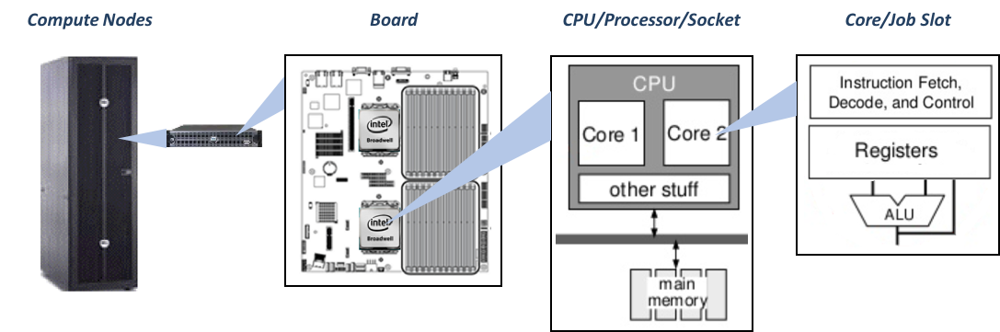

Glossary
The following is a list of commonly used terms and acronyms, and their definitions when used in the context of the MIT SuperCloud.
First is a visual labeling the portions of the system with the terminology we tend to use for each piece.

Accelerators A piece of hardware used to speed up computation, usually for a specific operation. GPUs are used as an accelerator for certain matrix operations.
Bandwidth A theoretical measure of how much data could be transferred from source to destination in a given amount of time.
Bash shell A specific shell and language used at the command line. This is the shell used on SuperCloud.
Bash script/Shell script A script using bash command syntax.
Batch job A job for running a pre-written script or executable. Resources are requested through the scheduler, the schedule allocates the resources when they are available, runs the script, and then exits.
Cluster Many nodes connected via a fast network interconnect.
Command Line A text-based user interface that allows a user to type commands that the computer then executes.
Compute Nodes Nodes where the computation is done on the system (where you will run your code). Compute nodes are managed by the scheduler.
Core A core is the smallest computation unit that can run a program.
CPU The Central Processing Unit (CPU) is the part of a computer which executes software programs. CPU refers to an individual silicon chip, such as Intel's Xeon-E5 or AMD's Opteron. A CPU contains one or more cores. Also known as a processor or socket.
Data Server Also called an Object Storage Server. A component of a parallel file system which stores all of the data of the files on the file system.
(Job) Dependency Defer the start of a job until the specified dependencies have been satisfied completed. This is usually the completion of another job.
Distributed Memory (see "Memory Models") In a distributed memory system, each CPU has its own private memory. Processes can only operate on local data. If remote data is required, the process must communicate with the remote process over an interconnect.
Downtime A regular maintenance day during which the system is unavailable.
Environment Variable Environment variables allow you to customize the environment in which programs run. They become part of the environment in which the programs run and can be queried by running programs. For example, you can set an environment variable to contain the path to your data files. Your running process can query this environment variable to get the location of the files.
File Permissions Properties of a file that determine who can read, write, or execute (run) a file.
Filesystem The system that controls how and where data is stored on storage disk. See Shared/Central Filesystem and Local Filesystem.
GPU A Graphics Processing Unit (GPU) is a specialized device originally used to generate computer output. Each compute node can host one or more GPUs. Modern GPUs have many simple compute cores and have been used for parallel processing.
Group Shared Directory A directory, created upon user request, where members of the group shared directory can share files with other members of the group. Since a user's home directory is accessible only to the user, a group shared directory is the only mechanism for users to share files.
GUI Graphical User Interface- these are interfaces that allow the user to interact with a program with a mouse through visual icons, as opposed to a command line interface.
Home Directory Where the user keeps their files. Each user has their own home directory.
HPC High Performance Computing (HPC) refers to the practice of aggregating computing power to achieve higher performance that would not possible by using a typical computer. The community often used concurrent computing to mean programs running at the same time v in serial one after another.
Hub A networking component that takes an incoming message and broadcasts it across all of the other ports of the hub.
Independent (Tasks/Processes) Tasks/processes that can operate by themselves without needing data from another.
Interactive Job An interactive job allows you to actually log in to a compute node. This is useful for when you need to compile software, test jobs and scripts, or run software that requires keyboard inputs and user interaction, such as a graphical interface .
Interconnects The connections between components of the computer (this interconnect is called the System Network), and the computer to the Internet network (this interconnect is called the Network Connection).
I/O (Input/Output) Refers operations that involve a transfer of data, particularly reading from and writing to the filesystem.
Job A job is a separately executable unit of work whose resources are allocated and shared. Users create job submission scripts to ask the scheduler for resources (cores, a specific processor type, etc). The scheduler places the requests in a queue and allocates the requested resources.
Job Array According to the Slurm documentation: "Job arrays offer a mechanism for submitting and managing collections of similar jobs quickly and easily". Job arrays are useful for applying the same processing routine to a collection of multiple inputs, data, or files. Job arrays offer a very simple way to submit a large number of independent or High Throughput processing jobs.
Job Slot A computational resource unit that is roughly equivalent to a processor core. One or more job slots can be used to execute a process.
Jupyter Notebook An interactive browser-based programming environment.
Latency The delay before a transfer of data begins following an instruction for its transfer.
Lgpn Average observed Load per GPU on the node.
LLGrid Beta LLGrid Beta is a collection of software packages that are released as a beta test on the SuperCloud. The beta software packages are ones that SuperCloud users have requested but are not included in the SuperCloud system image.
LLMapReduce A language-agnostic command for running loosely coupled or MapReduce applications.
LLx A course platform containing online courses that use the SuperCloud system for exercises.
Lnode Average observed Load on the node.
Local Filesystem Each node in the cluster has its own local filesystem that is only accessible from that node. The system image and software stack is on the local filesystem. It also contains space that can be used during jobs for fast file access.
Login Node The login node controls user access to a parallel computer. Users usually connect to login nodes via SSH to compile and debug their code, review their results, do some simple tests, and submit their interactive and batch jobs to the scheduler.
Loosely Coupled Applications that involve an independent (map) step where the same operation can be performed by many processes on different inputs, followed by a serial step that uses the output of the first step as its input. Also called MapReduce.
Lppn Average observed Load per process on the node.
Man page Short for "manual page". Documentation for a command or program.
MapReduce See "Loosely Coupled".
Mbpc Memory Bytes Per Core.
Mbpn Memory Bytes Per Node.
Mbpp Memory Bytes Per Process.
Memory See "Volatile Memory".
Memory Models (see "Distributed Memory" and "Shared Memory")
Metadata Server A component of a parallel file system which maintains the state of all files and folders within the file system, and the list of data servers where it can find the data for the files.
MIMO Mode Multiple input, multiple output is an application mode for use with LLMapReduce. In MIMO mode your application iterates through multiple inputs. LLMapReduce calls and loads your application once in order to process multiple assigned inputs.
Modules Here we are referring to "environment modules", but we often refer to them just as "modules". An open source software management tool used in most HPC facilities. Using modules enable users to selectively pick the software that they want and add them to their environment. Using the module command, you can manipulate your environment to gain access to new software or different versions of a package.
MPI The Message Passing Interface (MPI) is a library for passing messages between processes and between compute nodes within a parallel job running on a cluster. There are a variety of open source and commercial versions of MPI that have been developed over the past several decades including mpich, OpenMPI, and Intel MPI.
Multi-Threaded Describes an application that uses multiple threads. See "Shared Memory".
Ncpn Number of hardware Cores Per Node.
Ngpn Number of hardware GPUs Per Node.
Nnode Number of Nodes.
Node A stand-alone computer where jobs are run. Each node is connected to other compute nodes via a fast network interconnect. While accessible via interactive jobs, compute nodes are not meant to be accessed directly by users.
Non-Volatile Memory Storage device where the information stored on it remains intact even when the computer is shut down or restarted, e.g., disk drives.
Np Number of Processes = Nnode * Nppn.
Nppn Number of Processes Per Node.
Ntpn Number of Threads Per Node = Nppn * Ntpp.
Ntpp Number of Threads Per Process.
Operating System (OS) The software that manages how each of the applications running on the computer interact with the hardware of the computer to accomplish tasks.
Path A list of directories separated by "/" characters that shows the location of a file or directory in the directory structure.
Absolute Path The full path from the root of the filesystem, /. For example, the absolute path to the home directory for studentx would be: /home/gridsan/studentx.
Relative Path The path to a file or directory from the current location.
Partition A group of nodes with a set of constraints or rules for the jobs that run on them. Partitions may group nodes by node type (a partition of GPU nodes) or by job type (a set of nodes put aside for for jupyter, interactive, or download jobs). "Partition" is Slurm terminology, other schedulers refer to this as a "queue".
Process An independent computation running on a computer. Processes have their own address space and may create threads that will share their address space. Processes must use interprocess communication to communicate with other processes.
Router A networking component that acts as a special switch that moves messages across defined network boundaries.
Rsync A command for transferring and syncing files between systems.
Scheduler The scheduler receives job and task execution requests from users and manages how and where they are executed across the many compute nodes in the HPC system. Before starting a job, it ensures that the needed resources are available for the job. The scheduler monitors running jobs, can stop jobs, and can provide information about completed jobs and the status of the system (e.g. what resources are currently available).
Shared/Central Filesystem The shared filesystem is the filesystem that is available to all nodes in the cluster. Home and group directories are on the shared filesystem.
Shared Memory (see "Memory Models") In a shared memory system, there is shared memory that can be simultaneously accessed by multiple CPUs in a multiprocessor CPU. Communication or data passing among threads or processes in a shared memory system is via memory.
Shell Another term for the Linux command line interface.
SISO Mode Single input, single output is an application mode for use with LLMapReduce. In SISO mode, your application runs on a single input. LLMapReduce calls and loads your application once in order to process one assigned input.
Slurm Simple Linux Utility for Resource Management (SLURM) is a job scheduler which coordinates the running of many programs on a shared facility. Slurm is used on the MIT SuperCloud system. It replaced the SGE scheduler.
Socket A computational unit packaged as one, and usually made of a single chip often called processor. Modern sockets carry many cores.
SPMD Single Program Multiple Data
SSH Secure Shell (SSH) is a protocol to securely access remote computers. Based on the client-server model, users with an SSH client can access a remote computer. Some operating systems such as Linux and Mac OS have a built-in SSH client and others can use one of many publicly available clients. For Windows, we recommend PuTTY or Cygwin for ssh.
SSH Keys Credentials used as an authentication method for ssh. These come in pairs: a public and private key. Public keys are placed on the system you need to access, private keys are placed on your computer. When you ssh in the ssh program checks to see whether the public key fits your private key.
Submission/batch script A script for submitting a batch job to the scheduler. It is a bash script that tells the scheduler how to run your job, and may include the resources you are requesting for you job.
Switch A networking component that is more efficient than a hub. It takes an incoming network message and sends it out only onto the switch port on which its destination will be reached. Switches only transmit messages within a defined network.
Symlink Short for symbolic link. A file that acts as a shortcut by pointing to another file or directory on the filesystem. If you are in a group you may see a symbolic link to the shared group directory in your home directory.
Terminal (Window) A window containing a command line prompt.
Third-party software According to Wikipedia: a third-party software component is a reusable software component developed to be either freely distributed or sold by an entity other than the original vendor of the development platform.
Examples of third-party software on the SuperCloud system include MATLAB and TensorFlow.
Thread Threads are lightweight processes which exist within a single operating system process. Threads share the address space of the process that created them and can communicate directly with other threads in the same process.
Throughput An actual measure of how much data is successfully transferred from source to destination in a given amount of time.
Throughput (Workflow) A throughput application is one that is fully independent. Often this means it is running the same operation on a number of different inputs or parameters, and the result of an operation on one input does not depend on the result of another.
Triples (Mode) A job submission mode that allows you to request resources in a triple: Number of Nodes, Number of Processes per Node, and Number of Threads per Process. Available for LLsub job arrays, LLMapReduce, and pMatlab jobs.
Ubpn Average observed Used bytes per node.
Ubpp Average observed Used bytes per process.
Unix, Linux Unix is a family of portable, multi-tasking, multi-user operating systems. Linux is an open source, Unix-like operating system that is derived from Unix. The SuperCloud system runs the Ubuntu version of the Linux operating system.
User space User space is a set of locations where normal user processes (i.e. everything other than the kernel, the lowest part of the operating system) run.
Volatile Memory Storage device where applications and data are loaded so that the processors can actively work with them, e.g. RAM and cache. The information stored on it does not remain intact when the computer is shut down or restarted.
Web Portal A web page for SuperCloud where you can access your SuperCloud account. On the Web Portal you can add ssh keys, access the files in your home directory, and start Jupyter Notebooks.